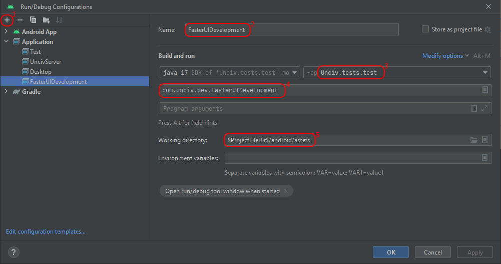

UI Development
Unciv is backed by GDX's scene2d for the UI, so check out their official documentation for more info about that.
We mainly use the Table class of scene2d, because it offers nice flexibility in laying out all the user interface.
The FasterUIDevelopment class
This class is basically just a small helper GDX application to help develop UI components faster.
It sets up the very basics of Unciv, so that you can then show one single UI component instantly. This gives you much faster response times for when you change something, so that you can immediately see the changes you made, without having to restart the game, load a bunch of stuff and navigate to where your UI component would actually be.
To use it, you set up a 'provider' that delivers an Actor to test, an instance of the UI element you want to develop, potentially with mock content to make it self-contained.
This provider can be any class that implements the IFasterUITester interface, and it needs to be made available at the beginning of the [FasterUIDevelopment] source.
The default way to do so is to add another entry to the FasterUIDevTesters enum.
(It's possible to keep the test setup code closer to the code to test, in the core module, all you have to do is refactor the IFasterUITester definition to the core module. Don't add a dependency on the test module to core instead.)
Example - works when inserted just before the ";" in FasterUIDevTesters:
MyTester {
override fun testCreateExample(screen: BaseScreen) = Label("My testing Label!", BaseScreen.skin)
},
Note you can disable a tester by overriding testGetLabel to return null.
When you launch FasterUIDevelopment as application (see below), you will be presented with a list of buttons to choose a test (unless only one test is enabled).
Here you can also enable Scene2D debugging if needed.
Once a specific test is up and running, your UI element is centered in the window and gets an orange border (the border actors are named, so you can easily recognize them in Scene2D debug).
Should your Actor not have sized itself (e.g. by pack()ing a Table that contains elements reporting sizes), it will be automatically sized to 90% of the stage.
You can still toggle Scene2D debugging with the middle mouse button (click the wheel).
You can leave any screen using the ESC key.
Resizing the window on the testing screen is not supported, but you can do so on the test chooser. A resize is not prevented, but no guarantees can be given for the results.
There's two ways to launch FasterUIDevelopment:
- Open this file in Android Studio under project:docs/Developers. That line above has a little green arrow in the left gutter that can be clicked.
- Create a Run Configuration similar to the desktop one described here, but with classpath
Unciv.tests.testand main classcom.unciv.dev.FasterUIDevelopment.  This way you can set breakpoints and debug.
The 'Gdx Scene2D debug' option
This option can be toggled on the secret 'Debug' page within Unciv's Options, or as described above in FasterUIDevelopment.
It turns on several UI debug features:
- Gdx Actor debug lines
- Mouse coordinates and FPS
- Descriptor of the Actor under the mouse
- Coordinate scales
- Logging touchDown on the stage level, before Scene2D gets to process the event
Gdx Actor debug lines
See Gdx wiki
The Scene2D debug option turns on mouse-over Gdx debug lines at the stage level using setDebugUnderMouse, setDebugTableUnderMouse and setDebugParentUnderMouse.
- Blue lines are Table bounds - Each Table has dimensions as a Widget and as a logical table determined by the cells. They will coincide if there is both expandX and expandY set somewhere.
- Red lines are Cell bounds - the part within cell padding.
- Green lines are Actor bounds of the Cell contents. If the Cell has both Fill directions set, they disappear below the red cell bounds (that is, unless the content Actor has a maxSize limiting the fill).
Mouse coordinates and FPS
On the bottom right is a semi-transparent panel with 3 numbers on top: X and Y of the mouse in Gdx stage coordinates, and FPS.
Descriptor of the Actor under the mouse
The lower part of said panel shows a string helping to identify which Actor the mouse is over. This will look for the actor's parent and potentially children, and the optional Actor.name field. Java class names or Label text are used when appropriate - it tries to build something short, but just descriptive enough. It uses the following separators / symbols:
:a colon separates class name from Actor.name - or Actor.name is used undecorated if it contains the class name."double-quotes show actual Label or TextButton text, max 20 characters, prefixed directly with the class name..a dot separates parent from hit Actor: If the above alone does not yield a descriptive label, the parent (if any) is added as descriptive label per the rules above or as simple class name.(..)after the above designates a sample from the children (the first nicely descriptive one), only if the parent won't add good recognition value.
Coordinate scales
All four edges of the screen get tiny tick marks, each 20 units in the Gdx stage coordinates, to help estimate paddings or sizes.
Click logging
Click logging happens through the regular logging system with the tag [StageMouseOverDebug], which is excluded by default. So, to see these events, you must have your run environment set up for logging and enable that tag.
A line contains the screen coordinates (in pixels, y goes top-down), the pointer number (e.g. when someone has a trackpad and mouse), the button number, and the "descriptor" as described above for the "hit" actor.
This hit test is performed with touchable = true, which can be different from the hit test used to show which actor the mouse is over.